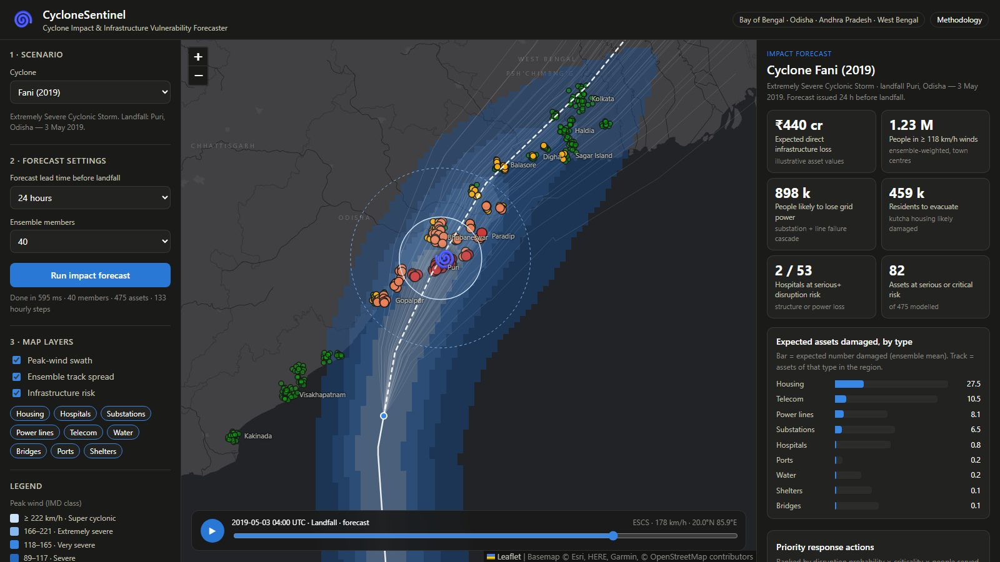
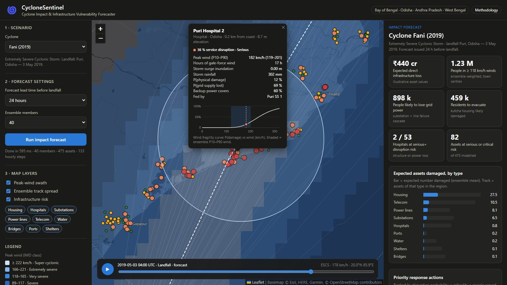

Track 5 · Cyclone Impact & Infrastructure Vulnerability Forecaster
Know which hospitals, substations, telecom towers and homes will fail — before the cyclone makes landfall.
The problem
Puri's power-distribution network largely destroyed; prolonged outages in Puri, Bhubaneswar, Cuttack.
Visakhapatnam's power and telecom networks collapsed for days; ~₹21,900 crore estimated losses.
Sundarbans and Kolkata hit by surge, wind and tree-fall — widespread power and telecom failure.
The solution

How it works
IMD track, hourly. Monte-Carlo members with error σ ≈ 45 km at 24 h, ±12 % intensity. Kaplan–DeMaria decay over land.
Holland (1980) wind + forward-motion asymmetry + terrain. Shelf-amplified surge. R-CLIPER-style rain → flood depth.
Lognormal wind & flood curves per asset class (HAZUS-MH derived) → P(damage).
Substation ← transmission line; hospitals, water, telecom ← substation, net of backup → P(disruption).
KPIs + actions ranked by risk × criticality × people served.
assets across 34 coastal towns in Odisha, AP, West Bengal
for 40 members × 475 assets × 130 hourly steps, in-browser
forecast lead time — uncertainty widens honestly
Key insight

Validation
| Cyclone | Actual landfall | Model's top-3 worst-hit towns | People likely without power | |
|---|---|---|---|---|
| Fani (2019) | Puri, Odisha | Puri, Bhubaneswar, Cuttack | 9.0 lakh | ✓ |
| Amphan (2020) | Sundarbans, West Bengal | Sagar Island, Haldia, Kolkata | 7.5 lakh | ✓ |
| Phailin (2013) | Gopalpur, Odisha | Berhampur, Gopalpur, Rambha | 3.6 lakh | ✓ |
| Hudhud (2014) | Visakhapatnam, AP | Visakhapatnam, Vizianagaram, Bheemunipatnam | 15.3 lakh | ✓ |
Automated tests also check the physics: peak wind at the radius of maximum wind, right-of-track bias, monotonic fragility, cascade ≥ damage, and spread growing with lead time.
Who uses it
Where to evacuate first, which shelters are themselves exposed, how many people to move.
Which substations and line spans will fail → stage crews and mobile transformers in advance.
Which hospitals lose grid power → fuel, generators, patient transfers.
Towers likely to fail → cell-on-wheels and satellite phones for first responders.
Surge and wind exposure of terminals → suspend operations, secure vessels.
What-if storms to stress-test the coast and prioritise retrofits.
Roadmap & tech
blop77.github.io/cyclone-sentinel
github.com/Blop77/cyclone-sentinel